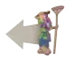
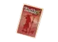

Takenoko
Board Game Arena 官方规则文档
Overview
The Japanese Emperor has been given a fantastic gift--a Chinese Giant Panda! But all this thing does is tear up the garden and eat bamboo. To keep the emperor's garden pristine, you'll have to direct the gardener, irrigate the plots, and lure the panda into eating the right bamboo shoots. And then there's the weather to deal with. The player who manages the garden best wins!
Gameplay
Everything starts with the garden's central pond. The gardener and panda are sitting here, waiting for you to expand the area. Each player takes turns adding plots to the garden, moving the gardener and panda around, and irrigating plots. This is all to fulfill objectives, which earn you points. The first player to complete nine objectives invokes the end of the game. At that point, every other player gets one more turn. The points for each player's completed objectives are summed up. The one with the most is the winner.
Turns
Each turn consists of 2 steps:
Weather
First, the weather die is rolled (except in the player's first turn) to determine that turn's weather. Weather has random effects at the start of the player's turn. Those effects are:
| Weather | Symbol | Description |
|---|---|---|
| Sun | Take a third action | |
| Rain | Grow 1 bamboo on any irrigated plot | |
| Wind | May take two identical actions this turn | |
| Storm | Move panda to any plot where it eats a bamboo as normal | |
| Clouds | Add an improvement to a plot without one. If no improvements are available, you may choose another type of weather. | |
| Question Mark | -- | Choose any weather type |
Fulfilling the weather effects is always optional.
Actions
After weather is determined, the player takes two actions. They cannot be the same action (unless the weather is "wind").
| Name | Symbol | Description |
|---|---|---|
| Plots | Draw 3 plot tiles. Choose one to place adjacent to the pond or 2 other existing plots. (There are 26 plots in total.) | |
| Irrigation | Place an irrigation channel between two garden plots. | |
| Gardener |  |
Move the gardener any number of tiles in a straight line. Bamboo will grow on it and any adjacent irrigated tiles of the same color. |
| Panda | Move the panda any number of tiles in a straight line. The panda eats one section of bamboo, which gets added to your reserve. | |
| Objective |  |
Take an objective card from one of the three categories (plot, panda, gardener). If the objective is already reflected in the garden's current state, it is discarded. You may choose another objective. (This is the only situation where an action can be cancelled and a different action can be taken.) |
Objectives
A player may claim completed objectives any time during their turn. There are three kinds:
- Plot: Fulfilled if there is a plot configuration as shown (color and shape). All plots must be irrigated.
- Panda: Fulfilled if you have bamboo units of the matching color. These are returned to the reserve after the objective is completed.
- Gardener: Fulfilled if the gardener is on any plot with the matching improvements and bamboo of the given height.
You can have no more than five objective cards at a time.
If completing a gardener objective, the gardener must be on the plot (or one of the plots) that fulfills the objective.
For plot objectives, the plots can be at any angle as long as the configuration matches (i.e., the plot can be sideways or upside down but not flipped around/mirrored).
Plots and Irrigation
When you take the gardener action, move the gardener in a straight line to any plot. Bamboo will grow on it and adjacent tiles of the same color, but only if they are irrigated. A plot is irrigated if it has the watershed improvement or one of its sides is covered by an irrigation channel (not a corner). The first time a plot is irrigated, bamboo grows.
Irrigation channels must always connect back to the central pond either directly or via previous irrigation channels. A plot with a watershed improvement is considered automatically irrigated for plot and gardening purposes, but not for placing channels.
Note: You could put an irrigation channel between a garden plot and the pond itself, but this would be a wasted move as any plot adjacent to the pond has irrigation built-in.
Growing Bamboo
There are two ways in which bamboo can grow. One is using the gardener action to move him to a plot. Bamboo will grow on it and adjacent tiles of the same color if they are irrigated. Another way is by "rain" weather. If the plot has a fertilizer improvement, the bamboo stalk will grow 2 taller with either action. Maximum height is 4.
Improvements
Some tiles start with improvements. Others are blank and can have improvements added with "clouds" weather. A plot can only ever have one improvement on it.
| Name | Symbol | Description |
|---|---|---|
| Fertilizer | When bamboo grows here for any reason, it grows two units instead of one. | |
| Watershed | A plot with this improvement is irrigated. Note that it cannot be used as a source for an irrigation channel. | |
| Enclosure | The panda can stop at or pass through this plot, but cannot eat any bamboo here. |
Completing Objectives and game end
When a player completes the number of objectives relative to the # of players, the game end is triggered.
- 2 players: 9 objectives
- 3 players: 8 objectives
- 4 players: 7 objectives
The first player to complete the required number of objectives receives the Emperor card (worth 2 bonus points). All other players get a final turn to complete their objectives. Highest score wins. On ties, the player with the most points for panda objectives wins.
Variants
Rule Differences Between First and Second Edition
| First Edition | Second Edition |
|---|---|
| You may hold improvements and irrigations in reserve instead of playing them immediately. | You must place improvements and irrigations immediately upon taking the action. |
| The gardener does not have to be on the plot to fulfill a gardener objective. | The gardener must be on the plot to fulfill a gardener objective. |
| You cannot place an improvement on a tile if there is bamboo on it. | You can place an improvement on a tile even if there is bamboo on it. |
| You cannot place bamboo on a non-irrigated tile for any reason. | On "rain" weather, you may place bamboo on a non-irrigated tile. |
| When you draw an objective, if the objective has already been realized, it is discarded (original edition advanced + FAQ) | You may draw and keep objectives that are realized on the map |